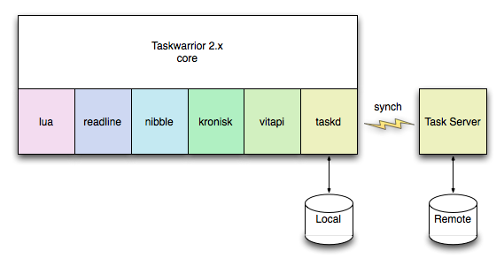

Taskwarrior 2.x is the result of many simultaneous enhancements to core components and desirable new features. Many of these changes have been deferred until this time due to size, complexity, or the need to think about the interactions between components.
Here are the high-level plans for the various components and features. There is a recurring theme of shrinking and simplifying the core code base, while adding flexibility and more add-on capabilities.

By supporting the Task Server Protocol it will be possible to have multiple clients synchronizing data, and cloud backup of local task data. It will allow for synching, offline storage and merging of data. This is an optional feature. Future enhancements to the task server will also be available in taskwarrior.
The libtaskd library provides synch capabilities between the local machine and a task server by correctly implementing the Task Server Protocol. Additionally, local storage, a synch backlog and GC/pre-processing features are provided. By replacing current local storage, the format will be automatically upgraded to JSON.
The libtaskd library will be available separately, and may be used by third-party software to access task data, leading to alternative clients implementations.
The libkronisk library takes the current flexibility with date specifications, and adds more variations, allowing input using forms like these:
3rd Tuesday in March
Easter + 2 weeks
Thursday before the 20th
4 business days
The library effectively forks the date handling code, which will be
enhanced and released on its own schedule. This will reduce the core code
size.
The libvitapi library provides support for 256-color xterm output, basic drawing primitives, terminal size determination and input. This will reduce the core code size.
Command line parsing will be greatly improved, with new capabilities such as those listed in a recent "syntax festival" call for desirable CLI enhancements. Examples include:
task <id|uuid> <command>
task [<filter>] update <modifications>
task list /regex/
The second example illustrates the added complexity supported, by allowing
a combination of a filter and a follow-on command. This would allow such
commands as:
task project:foo update pri:This command removes the priority from all tasks in project 'foo'. Various other bulk modifications will be supported.
The libnibble library provides parsing capabilities in terms of a shift-reduce toolkit, a BNF parser and a large set of text manipulation capabilities. This will reduce the core code size.
Using the Lua API, user-defined attributes may be specified, and will be first-class data types. This means they may specify custom sorting characteristics, may contribute to urgency calculations, and may support multiple display formats. User-defined attributes will be indistinguishable from built-in attributes.
Several current reportable fields will be moved out of the core code and implemented as user-defined attributes. This will reduce the core code size.
The built-in data fields will be enhanced to allow multiple display formats. An example is "priority", which could be displayed in short form as 'H', 'M' or 'L' or in long form as 'High', 'Medium' and 'Low'. Each field will likely have several format options.
A full DOM will provide access to all internal data such as configuration, arguments, report definitions and task data. The DOM will provide a means to access data that will be consistent between C++ and Lua. An example of DOM access might be:
123.dueWhich accesses the due date for task 123.
The Lua programming language will be integrated. Using Lua, it will be possible to define new commands, new attributes, and new display formats.
An API will be callable from Lua code, that provides access to internal data via the DOM. A series of well-defined hooks, or entry points allow the Lua scripts to be triggered at appropriate times.
Using these Lua plugins it will be possible to extend the capabilities in many ways, and will reduce the core code size. Several commands will be implemented in this way.
By combining DOM access and expression evaluation, it will be possible, as an example, to add a new task that inherits a due date from another task:
task add ... due:123.dueThis adds a new task with a due date set to the same due date as task 123. Similarly the following is possible:
task add ... due:123.due + 1wk
The tabular data rendering will be updated with a new View object to allow greater control of color and formatting, better UTF8 support, much better performance and more flexible sorting.